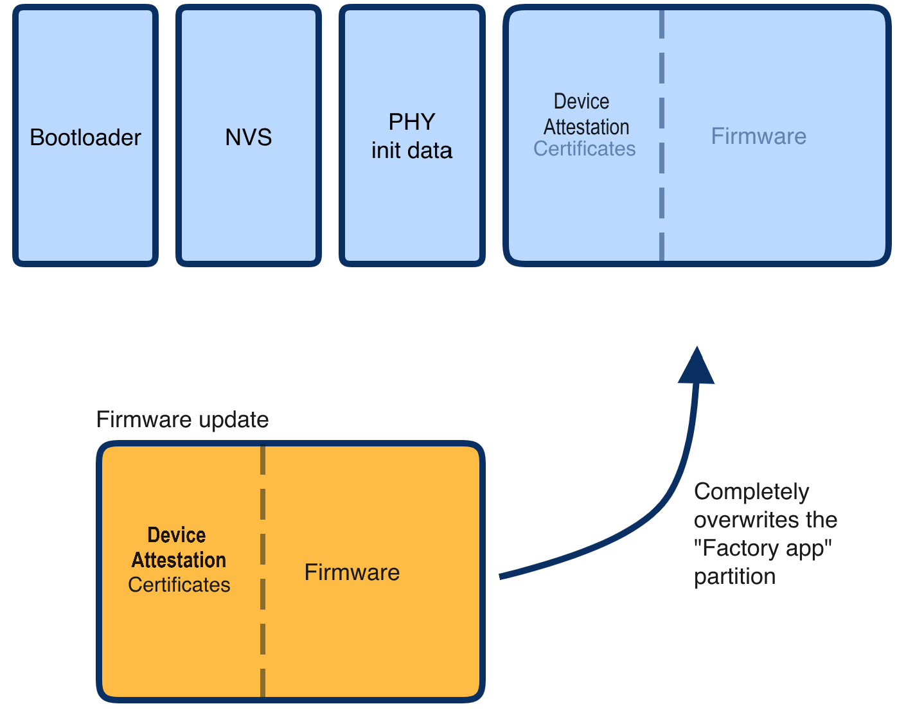

In this codelab we will show you how you can secure your matter apps
In this codelab, you will:

In this CodeLab we will generate new Device Attestation Certificates and use these on our Matter applications.
Note, we will use the Matter lighting app that we coded in a previous codelab.
This set of Codelabs will use Ubuntu 22.04 on a Amd64 based architecture.
You will need
Ubuntu 22.04 with a Bluetooth interfaceThe total codelab will take approximately a Duration of 30 minuates to complete.
We will use the Matter light that we built in
~/Projects/starter-esp-matter-app
export VID=hexVendorId export PID=hexProductId
export VID=FFAA
export PID=FFA1
echo ${VID}
echo ${PID}
cd ~/Projects/esp-matter/connectedhomeip/connectedhomeip/
./out/host/chip-cert gen-cd \
--key credentials/test/certification-declaration/Chip-Test-CD-Signing-Key.pem \
--cert credentials/test/certification-declaration/Chip-Test-CD-Signing-Cert.pem \
--out credentials/test/certification-declaration/Chip-Test-CD-${VID}-${PID}.der \
--format-version "1" \
--vendor-id "${VID}" \
--product-id "${PID}" \
--device-type-id "0x1234" \
--certificate-id "ZIG20141ZB330001-24" \
--security-level "0" \
--security-info "0" \
--version-number "9876" \
--certification-type "0"
Look in the credentials/test/certification-declaration directory.
./out/host/chip-cert print-cd credentials/test/certification-declaration/Chip-Test-CD-${VID}-${PID}.der
In this example we'll use Matter's own test Product Attestation Authority (PAA) certificate and signing key Chip-Test-PAA-NoVID as our root certificate. We'll use it as the root CA to generate our own PAI and DAC.
./out/host/chip-cert gen-att-cert --type i \
--subject-cn "Matter Test PAI" \
--subject-vid "${VID}" \
--valid-from "2024-01-01 14:23:43" \
--lifetime "4294967295" \
--ca-key credentials/test/attestation/Chip-Test-PAA-NoVID-Key.pem \
--ca-cert credentials/test/attestation/Chip-Test-PAA-NoVID-Cert.pem \
--out-key credentials/test/attestation/"test-PAI-${VID}-key".pem \
--out credentials/test/attestation/"test-PAI-${VID}-cert".pem
./out/host/chip-cert gen-att-cert --type d \
--subject-cn "Matter Test DAC 0" \
--subject-vid "${VID}" \
--subject-pid "${PID}" \
--valid-from "2024-01-01 14:23:43" \
--lifetime "4294967295" \
--ca-key credentials/test/attestation/"test-PAI-${VID}-key".pem \
--ca-cert credentials/test/attestation/"test-PAI-${VID}-cert".pem \
--out-key credentials/test/attestation/"test-DAC-${VID}-${PID}-key".pem \
--out credentials/test/attestation/"test-DAC-${VID}-${PID}-cert".pem
./out/host/chip-cert validate-att-cert \
--dac credentials/test/attestation/"test-DAC-${VID}-${PID}-cert".pem \
--pai credentials/test/attestation/"test-PAI-${VID}-cert".pem \
--paa credentials/test/attestation/Chip-Test-PAA-NoVID-Cert.pem
openssl ec -noout -text -in \
credentials/test/attestation/test-DAC-${VID}-${PID}-key.pem
The output should look something like this:
read EC key
Private-Key: (256 bit)
priv:
c9:f2:b3:04:b2:db:0d:6f:cd:c6:be:f3:7b:76:8d:
8c:01:4e:0b:9e:ce:3e:72:49:3c:0e:35:63:7c:6c:
6c:d6
pub:
04:4f:93:ba:3b:bf:63:90:73:98:76:1e:af:87:79:
11:e6:77:e8:e2:df:a7:49:f1:7c:ac:a8:a6:91:76:
08:5b:39:ce:6c:72:db:6d:9a:92:b3:ba:05:b0:e8:
31:a0:bf:36:50:2b:5c:72:55:7f:11:c8:01:ff:3a:
46:b9:19:60:28
ASN1 OID: prime256v1
NIST CURVE: P-256
openssl x509 -noout -text -in \
credentials/test/attestation/test-DAC-${VID}-${PID}-cert.pem
The output should look something like this:
Certificate:
Data:
Version: 3 (0x2)
Serial Number: 2875998130766646679 (0x27e9990fef088d97)
Signature Algorithm: ecdsa-with-SHA256
Issuer: CN = Matter Test PAI, 1.3.6.1.4.1.37244.2.1 = hexVendorId
Validity
Not Before: Jun 28 14:23:43 2021 GMT
Not After : Dec 31 23:59:59 9999 GMT
Subject: CN = Matter Test DAC 0, 1.3.6.1.4.1.37244.2.1 = hexVendorId
, 1.3.6.1.4.1.37244.2.2 = hexProductId
Subject Public Key Info:
Public Key Algorithm: id-ecPublicKey
Public-Key: (256 bit)
pub:
04:4f:93:ba:3b:bf:63:90:73:98:76:1e:af:87:79:
11:e6:77:e8:e2:df:a7:49:f1:7c:ac:a8:a6:91:76:
08:5b:39:ce:6c:72:db:6d:9a:92:b3:ba:05:b0:e8:
31:a0:bf:36:50:2b:5c:72:55:7f:11:c8:01:ff:3a:
46:b9:19:60:28
ASN1 OID: prime256v1
NIST CURVE: P-256
X509v3 extensions:
X509v3 Basic Constraints: critical
CA:FALSE
X509v3 Key Usage: critical
Digital Signature
X509v3 Subject Key Identifier:
21:0A:CA:B1:B6:5F:17:65:D8:61:19:73:84:1A:9D:52:81:19:C5:39
X509v3 Authority Key Identifier:
37:7F:24:9A:73:41:4B:16:6E:6A:42:6E:F5:E8:89:FB:75:F8:77:BB
Signature Algorithm: ecdsa-with-SHA256
Signature Value:
30:45:02:20:38:8f:c5:0d:3e:90:95:dd:7d:7c:e9:5a:05:19:
1f:2d:14:08:a3:d7:0e:b5:15:6d:d3:b0:0b:f7:b8:28:4d:bf:
02:21:00:d4:05:30:43:a6:05:00:0e:b9:99:0d:34:3d:75:fe:
d3:c1:4e:73:ff:e7:05:64:7a:62:8d:2d:38:8f:fd:4d:ad
Note: A similar process could be used for generating a self-signed PAA, but doing so is not necessary.
Instead, what we've done here is to use an existing self-signed development PAA that doesn't include VID information.
For more examples of generating a CD, look at credentials/test/gen-test-cds.sh And for more examples of generating a PAA, PAI, and DAC, see credentials/test/gen-test-attestation-certs.sh
In this section we will hard code the DAC certs into the Matter Light
#!/bin/bash
#
# generate-embeddable-certs.sh script
# —----------------------------------
#
# This script generates self-minted DAC and PAI.
# The output may easily be included in your C++ source code.
#
# Edit this information with your paths and certificates
folder="credentials/test/attestation"
chip_cert_tool="out/host/chip-cert"
cert_file_der="${folder}/test-PAI-${VID}-cert.der"
cert_file_pem="${folder}/test-PAI-${VID}-cert.pem"
key_file_pem="${folder}/test-PAI-${VID}-key.pem"
type="Pai"
printf "namespace chip {\n"
printf "namespace DevelopmentCerts {\n\n"
printf "#if CHIP_DEVICE_CONFIG_DEVICE_VENDOR_ID == 0x${VID} && CHIP_DEVICE_CONFIG_DEVICE_PRODUCT_ID == 0x${PID}\n\n"
printcert() {
# convert cert to DER
if [ -f "${cert_file_der}" ]; then
rm "${cert_file_der}"
fi
"${chip_cert_tool}" convert-cert "${cert_file_pem}" "${cert_file_der}" --x509-der
printf "// ------------------------------------------------------------ \n"
printf "// ${type} CERTIFICATE ${cert_file_der} \n\n"
printf "constexpr uint8_t ${type}_Cert_Array[] = {\n"
less -f "${cert_file_der}" | od -t x1 -An | sed 's/\</0x/g' | sed 's/\>/,/g' | sed 's/^/ /g'
printf "};\n\n"
printf "ByteSpan k${type}Cert = ByteSpan(${type}_Cert_Array);\n\n"
printf "// ${type} PUBLIC KEY FROM ${key_file_pem} \n\n"
printf "constexpr uint8_t ${type}_PublicKey_Array[] = {\n"
openssl ec -text -noout -in "${key_file_pem}" 2>/dev/null | sed '/ASN1 OID/d' | sed '/NIST CURVE/d' | sed -n '/pub:/,$p' | sed '/pub:/d' | sed 's/\([0-9a-fA-F][0-9a-fA-F]\)/0x\1/g' | sed 's/:/, /g'
printf "};\n\n"
printf "ByteSpan k${type}PublicKey = ByteSpan(${type}_PublicKey_Array);\n\n"
printf "// ${type} PRIVATE KEY FROM ${key_file_pem} \n\n"
printf "constexpr uint8_t ${type}_PrivateKey_Array[] = {\n"
openssl ec -text -noout -in "${key_file_pem}" 2>/dev/null | sed '/read EC key/d' | sed '/Private-Key/d' | sed '/priv:/d' | sed '/pub:/,$d' | sed 's/\([0-9a-fA-F][0-9a-fA-F]\)/0x\1/g' | sed 's/:/, /g'
printf "};\n\n"
printf "ByteSpan k${type}PrivateKey = ByteSpan(${type}_PrivateKey_Array);\n\n"
}
# generates PAI
printcert
type="Dac"
cert_file_der="${folder}/test-DAC-${VID}-${PID}-cert.der"
cert_file_pem="${folder}/test-DAC-${VID}-${PID}-cert.pem"
key_file_pem="${folder}/test-DAC-${VID}-${PID}-key.pem"
# generates DAC
printcert
printf "#endif // CHIP_DEVICE_CONFIG_DEVICE_PRODUCT_ID\n"
printf "} // namespace DevelopmentCerts\n"
printf "} // namespace chip\n"
cd ~/Projects/esp-matter/connectedhomeip/connectedhomeip/src/credentials/examples/
code ExampleDACs.cpp
. ../certs/generate-embeddable-certs.sh
cd ~/Projects/esp-matter/connectedhomeip/connectedhomeip/src/credentials/examples/
code ExampleDACs.cpp
Extract a text representation of the contents of your CD file using xxd:
xxd -i credentials/test/certification-declaration/Chip-Test-CD-${VID}-${PID}.der
#elif CHIP_DEVICE_CONFIG_DEVICE_VENDOR_ID == 0xFFAA
const uint8_t kCdForAllExamples[] = {
0x30, 0x81, 0xe9, 0x06, 0x09, 0x2a, 0x86, 0x48, 0x86, 0xf7, 0x0d, 0x01,
0x07, 0x02, 0xa0, 0x81, 0xdb, 0x30, 0x81, 0xd8, 0x02, 0x01, 0x03, 0x31,
0x0d, 0x30, 0x0b, 0x06, 0x09, 0x60, 0x86, 0x48, 0x01, 0x65, 0x03, 0x04,
0x02, 0x01, 0x30, 0x45, 0x06, 0x09, 0x2a, 0x86, 0x48, 0x86, 0xf7, 0x0d,
0x01, 0x07, 0x01, 0xa0, 0x38, 0x04, 0x36, 0x15, 0x24, 0x00, 0x01, 0x25,
0x01, 0xfe, 0xca, 0x36, 0x02, 0x05, 0xce, 0xfa, 0x18, 0x25, 0x03, 0x34,
0x12, 0x2c, 0x04, 0x13, 0x5a, 0x49, 0x47, 0x32, 0x30, 0x31, 0x34, 0x31,
0x5a, 0x42, 0x33, 0x33, 0x30, 0x30, 0x30, 0x31, 0x2d, 0x32, 0x34, 0x24,
0x05, 0x00, 0x24, 0x06, 0x00, 0x25, 0x07, 0x76, 0x98, 0x24, 0x08, 0x00,
0x18, 0x31, 0x7d, 0x30, 0x7b, 0x02, 0x01, 0x03, 0x80, 0x14, 0x62, 0xfa,
0x82, 0x33, 0x59, 0xac, 0xfa, 0xa9, 0x96, 0x3e, 0x1c, 0xfa, 0x14, 0x0a,
0xdd, 0xf5, 0x04, 0xf3, 0x71, 0x60, 0x30, 0x0b, 0x06, 0x09, 0x60, 0x86,
0x48, 0x01, 0x65, 0x03, 0x04, 0x02, 0x01, 0x30, 0x0a, 0x06, 0x08, 0x2a,
0x86, 0x48, 0xce, 0x3d, 0x04, 0x03, 0x02, 0x04, 0x47, 0x30, 0x45, 0x02,
0x20, 0x53, 0x25, 0x03, 0x2c, 0x96, 0x50, 0xb6, 0x64, 0xf4, 0x18, 0xbf,
0x99, 0x47, 0xf8, 0x9d, 0xe6, 0xeb, 0x43, 0x94, 0xf1, 0xce, 0xb2, 0x61,
0x00, 0xe0, 0xf9, 0x89, 0xa8, 0x71, 0x82, 0x02, 0x0a, 0x02, 0x21, 0x00,
0xea, 0x0a, 0x40, 0xab, 0x87, 0xad, 0x7e, 0x25, 0xe1, 0xa1, 0x6c, 0xb1,
0x12, 0xfa, 0x86, 0xfe, 0xea, 0x8a, 0xaf, 0x4b, 0xc1, 0xf3, 0x6f, 0x09,
0x85, 0x46, 0x50, 0xb6, 0xd0, 0x55, 0x40, 0xe2
};
};
#Put this code just before the last else code
#else /* Fall back to the VID=0xFFF1 CD */
If everything is working you should be able to build and flash the new matter light app
Now build the example - note best to do a full clean and remove the build directory
idf.py clean
idf.py fullclean
rm -rf build
idf.py set-target esp32
idf.py menuconfig #set the vendor id to VID and product id to PID
idf.py build
idf.py -p /dev/ttyUSB0 erase-flash
idf.py -p /dev/ttyUSB0 flash monitor
Now try to pair the device using the chip-tool
cd connectedhomeip
rm -rf /tmp/chip*
./out/host/chip-tool pairing ble-wifi 1 <SSID> <PASSWORD> 20202021 3840
Check that pairing worked by reading basic information
./out/host/chip-tool basicinformation read vendor-name 1 0
Note: If you run into problems using the chip-tool with BLE on Mac, please follow the directions on the Matter SDK repo documentation here. In particular, you have to have the Bluetooth Central Matter Client Developer mode profile installed.
In this section, we will generate PKI credentials for ESP32 matter devices and store them in esp_secure_cert partition
Convert DAC key from .pem to .der format.
openssl ec -in credentials/test/attestation/"test-DAC-${VID}-${PID}-key".pem -out credentials/test/attestation/"test-DAC-${VID}-${PID}-key".der -inform pem -outform der
Convert DAC and PAI cert from .pem to .der format
openssl x509 -in credentials/test/attestation/"test-DAC-${VID}-${PID}-cert".pem -out credentials/test/attestation/"test-DAC-${VID}-${PID}-cert".der -inform pem -outform der
openssl x509 -in credentials/test/attestation/"test-PAI-${VID}-cert".pem -out credentials/test/attestation/"test-PAI-${VID}-cert".der -inform pem -outform der
configure_esp_secure_cert.py --private-key credentials/test/attestation/"test-DAC-${VID}-${PID}-key".der \
--device-cert credentials/test/attestation/"test-DAC-${VID}-${PID}-cert".der \
--ca-cert credentials/test/attestation/"test-PAI-${VID}-cert".der \
--target_chip esp32 \
--keep_ds_data_on_host \
--port /dev/ttyUSB0 \
--priv_key_algo ECDSA 256
You should notice that a new esp_secure_cert_data folder is created with the esp secure cert file.
We must now set up the configuration
# Disable the DS Peripheral support
CONFIG_ESP_SECURE_CERT_DS_PERIPHERAL=n
# Use DAC Provider implementation which reads attestation data from secure cert partition
CONFIG_SEC_CERT_DAC_PROVIDER=y
# Enable some options which reads CD and other basic info from the factory partition
CONFIG_ENABLE_ESP32_FACTORY_DATA_PROVIDER=y
CONFIG_ENABLE_ESP32_DEVICE_INSTANCE_INFO_PROVIDER=y
CONFIG_FACTORY_COMMISSIONABLE_DATA_PROVIDER=y
CONFIG_FACTORY_DEVICE_INSTANCE_INFO_PROVIDER=y
idf.py menuconfig
idf.py build
We will not set up the Factory partition which contains basic information like VID, PID, etc, and CD.
cd esp-matter/tools/mfg_tool
export PATH=$PATH:$PWD/../../connectedhomeip/connectedhomeip/out/host
Generate the factory partition, please use the APPROPRIATE values for -v (Vendor Id), -p (Product Id), and -cd (Certification Declaration).
./mfg_tool.py --passcode 89674523 \
--discriminator 2245 \
-cd TEST_CD_FFF1_8001.der \
-v 0xFFF1 --vendor-name Espressif \
-p 0x8001 --product-name Bulb \
--hw-ver 1 --hw-ver-str DevKit
Few important output lines are mentioned below. Please take a note of onboarding codes, these can be used for commissioning the device.
[2024-12-02 11:18:12,059] [ INFO] - Generated QR code: MT:-24J06PF150QJ850Y10
[2024-12-02 11:18:12,059] [ INFO] - Generated manual code: 20489154736
Factory partition binary will be generated at the below path. Please check for <uuid>.bin file in this directory.
[2024-12-02 11:18:12,381] [ INFO] - Generated output files at: out/fff1_8001/e17c95e1-521e-4979-b90b-04d
Note: Flash only if not flashed on manufacturing line.
esptool.py -p (PORT) write_flash 0xd000 ~/Projects/esp-matter/connectedhomeip/connectedhomeip/esp_secure_cert_data/esp_secure_cert.bin
esptool.py -p (PORT) write_flash 0x10000 path/to/partition/generated/using/mfg_tool/uuid.bin
idf.py -p (PORT) flash
Confirm that the device can be provisioned on to the matter fabric using the chip tool
cd connectedhomeip
rm -rf /tmp/chip*
./out/host/chip-tool pairing ble-wifi 1 <SSID> <PASSWORD> 89674523 2245
./out/host/chip-tool basicinformation read vandor-name 1 0
In the output logs, you should see that the Vendor Name
[1682445848.220725][5128:5130] CHIP:TOO: VendorName: TEST_VENDOR
You should stop the switch-app process by using Ctrl-] in the first esp32 monitor window, the light-app process by using Ctrl-] in the second esp32 monitor window and then run idf erase flash.
It also a great habit to clean up the temporary files after you finish testing by using this command:
rm -fr /tmp/chip_*
Note: removing the /tmp/chip* files can sometimes clear up unexpected behaviours.
Checkout the official documentation [Espressif Matter SDK documentation here: ] (https://docs.espressif.com/projects/esp-matter/en/latest/esp32/)
Also check out the Project CHIP Matter SDK repo Project Chip - ConnectedHomeIp